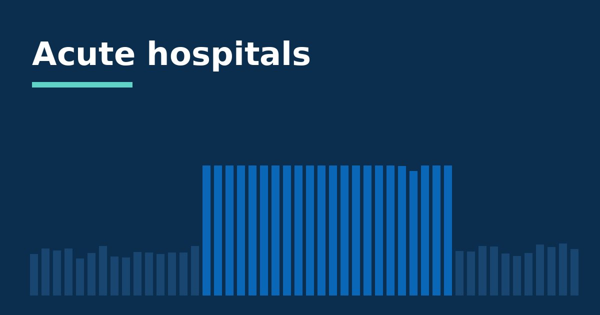
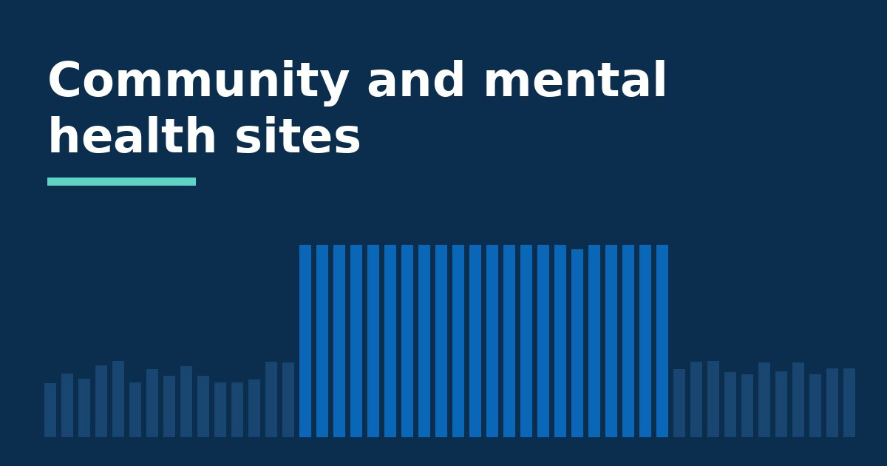
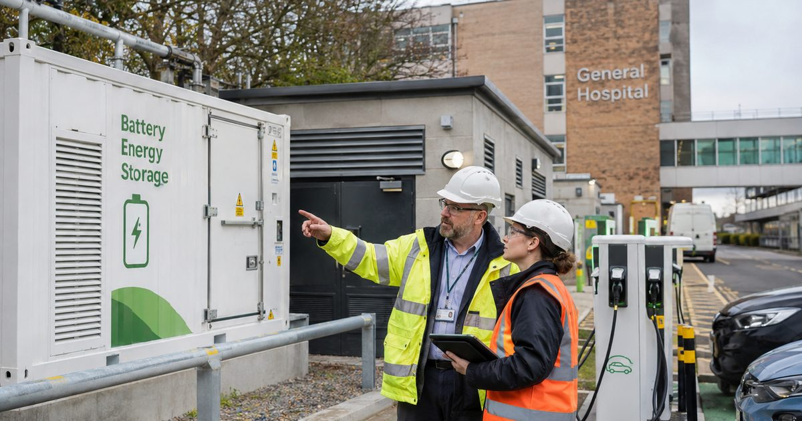
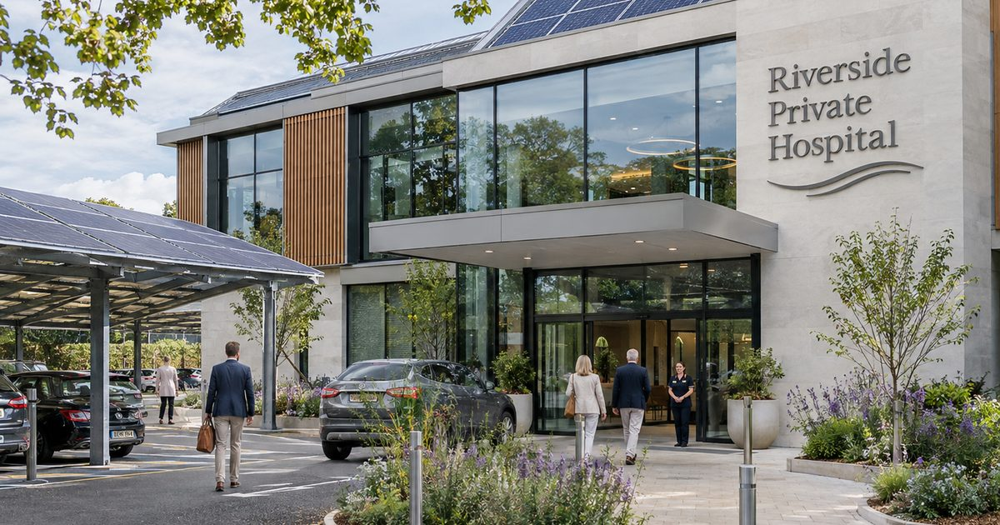

What to look for in your setting
Each part of a healthcare estate uses electricity differently. Choose yours to see what normal looks like, what to check first and how to set it up in the analyser.

Acute hospitals
An acute hospital never closes, so out-of-hours use tells you little. Day and night, base load, peaks against capacity and lasting changes tell you a lot.
Read more
Community and mental health sites
Inpatient units run around the clock, while the clinics, therapy spaces and offices beside them keep working hours. Separating the two is where the savings show.
Read more
Health centres, clinics and GP premises
Health centres keep set hours, so use while they are closed is easy to see and often cheap to fix.
Read more
Ambulance stations and fleet depots
Stations run around the clock and fleets are moving to electric vehicles, so supply capacity is the question to answer first.
Read more
Private and independent hospitals
The same engineering, different targets, finance and reporting duties.
Read moreCheck your whole estate
Load every meter at once and the analyser ranks the sites, so you know which to look at first.